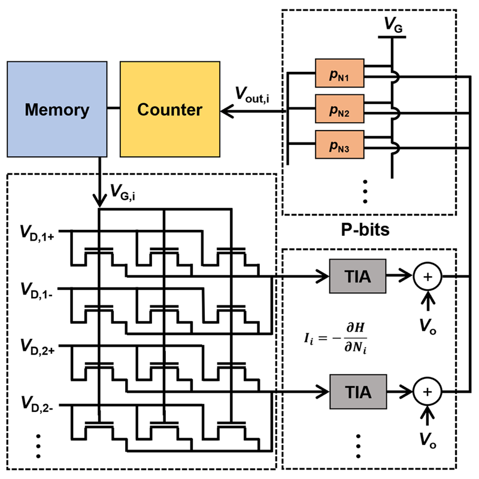
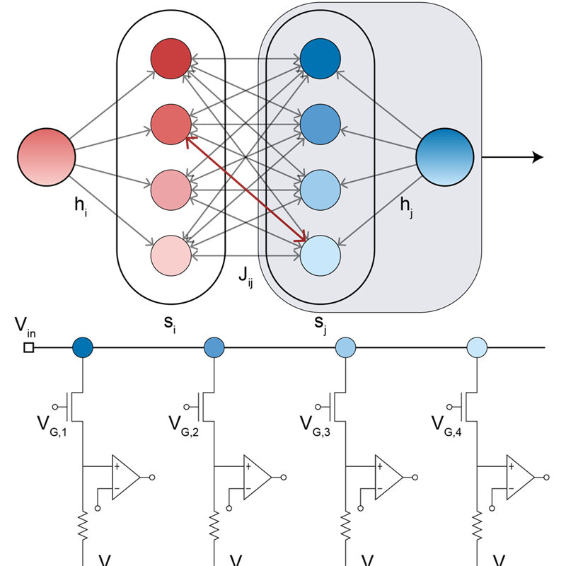
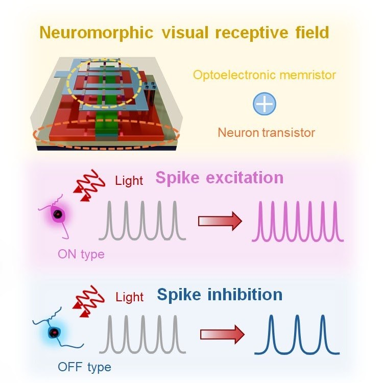
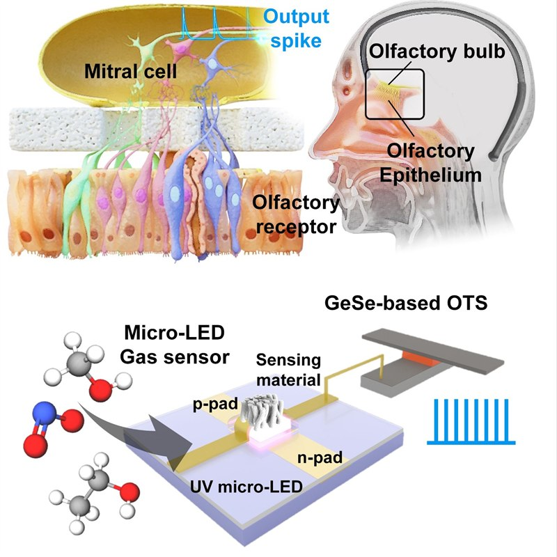

We design emerging semiconductor devices and hardware architectures — from neuromorphic and probabilistic computing to three-dimensional integration — spanning device physics, fabrication, and system-level validation.
How do we compute beyond the limits of conventional CMOS scaling? 마우스를 올리면 설명이 펼쳐지고, 클릭하면 상세 페이지로 이동합니다.
Vertical stacking and heterogeneous integration for next-generation logic and memory, with a focus on thermal budget and interconnect parasitics.
More ViewNeuromorphic devices and synaptic arrays that emulate biological computation — visual receptive fields, olfaction, and spiking dynamics.
More ViewProbabilistic bits and Ising machines for combinatorial optimization, realized entirely in CMOS-compatible technology.
More View논문을 클릭하면 DOI 페이지가 새 탭으로 열립니다.




소자 물리, 공정, 회로 설계, 측정·데이터 분석에 관심 있는 대학원생과 학부연구생을 상시 모집합니다.